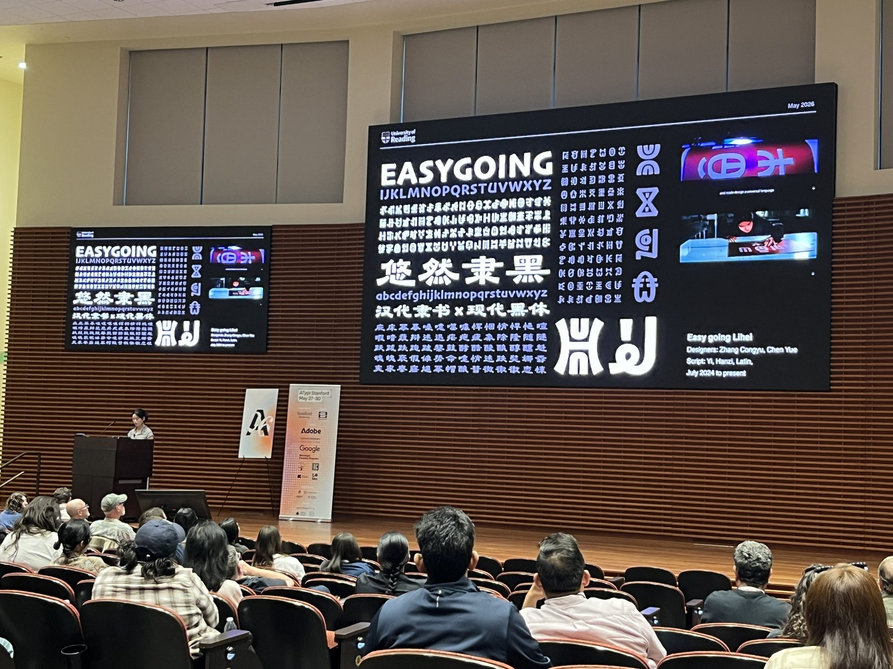
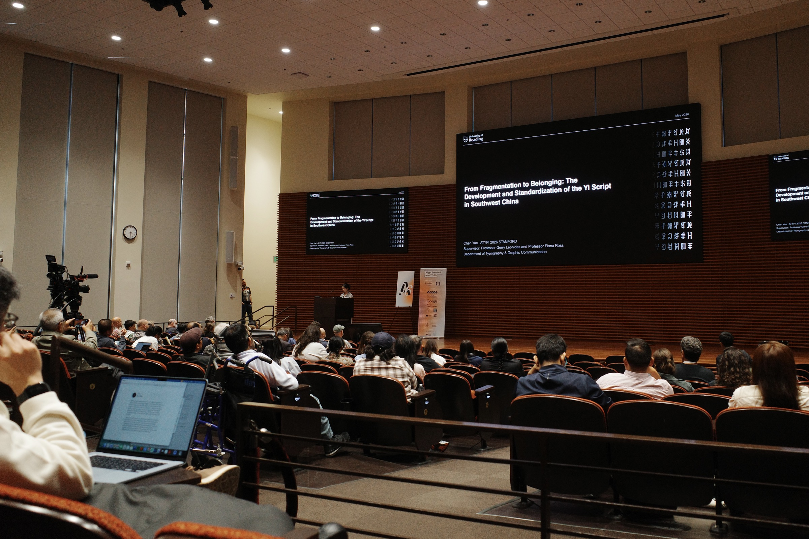
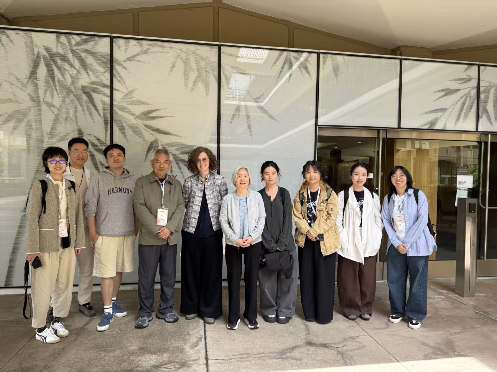
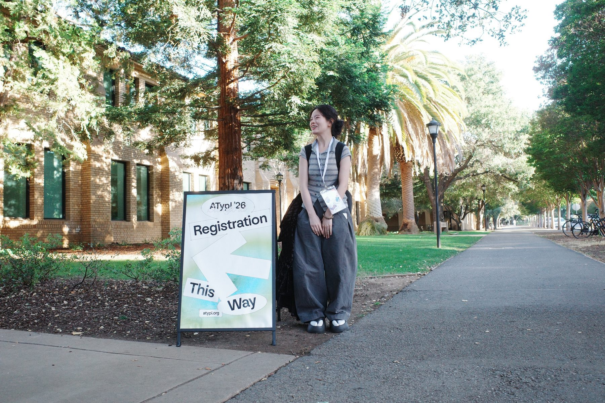
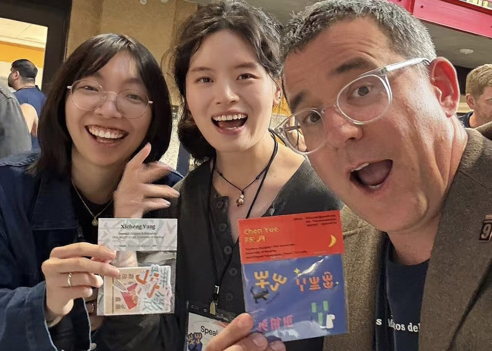
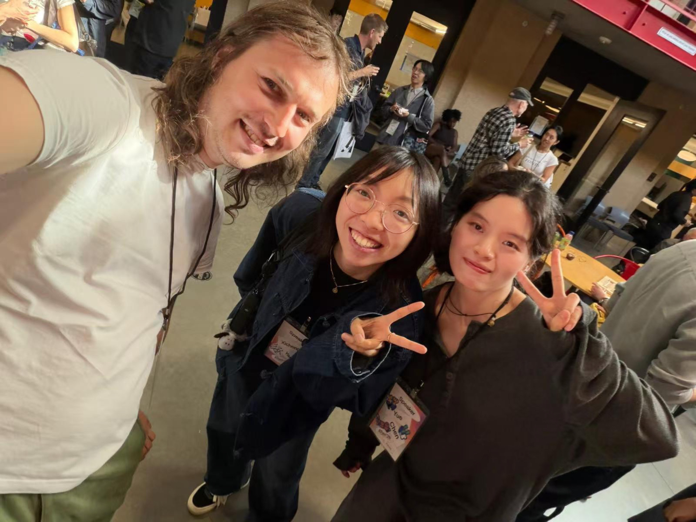

Conference Presentation
ATypI 2026 Stanford
From Fragmentation to Belonging: The Development and Standardization of the Yi Script in Southwest China






Conference Presentation
From Fragmentation to Belonging: The Development and Standardization of the Yi Script in Southwest China





